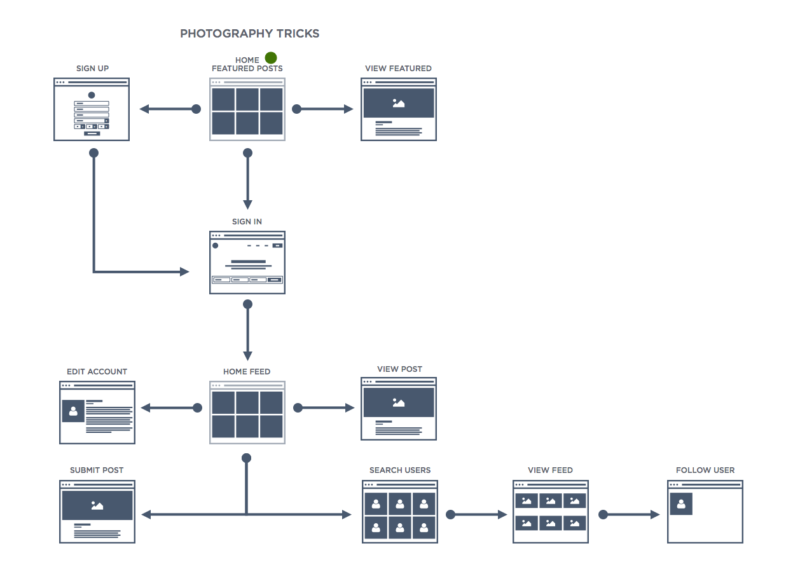
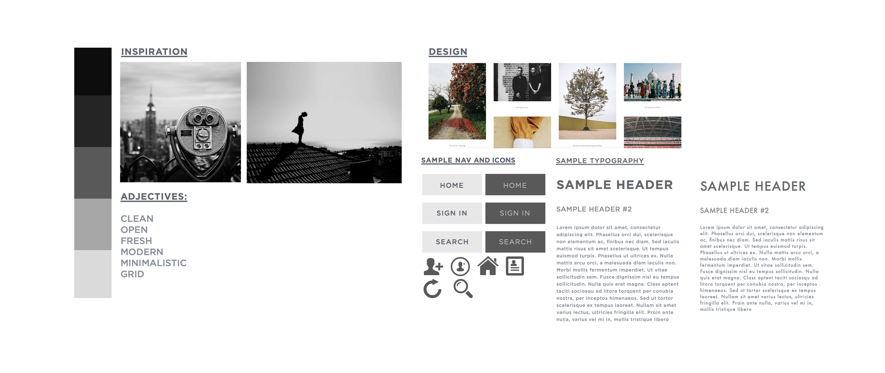

The creation of: Imagery
(An app that allows you to share and teach photography)

Vision
As a photographer, I believe a perfect photograph is a combination of both taking the shot and editing the photo. The photograph grabs your attention and the editing sets the mood of the photo. When I view other photos, I often wonder how they achieved the editing effect on that photo. With Imagery, I am building a community that allows users to not only share their photos but their techniques as well.
Userflow
Given only two weeks for this project, I started brainstorming how the website would work and how users would navigate it. With that I created a userflow in Bohemian Sketch.
I wanted the user to understand how our product works so I envisioned the homepage to have featured photos where the user can click on the image and view the photographers technique. From there the user can sign up and create an account that allowed them to follow photographers, edit their profile, and create content of their own.
Moodboard
I started creating a moodboard so that I have an idea how I wanted my design to be. I believe simplicity is the ultimate sophistication, so I went for a minimal look that allowed the photos to be the highlight of the product.
With the moodboard completed, I had an idea on how a user would navigate the product along with how the product would look. I was ready to start building mockups
Mockups
With a moodboard and userflow in hand, I started to create mockups. I went with a minimalist approach in my moodboard, that allowed the photos to be the main attraction. I wanted to make sure that all other parts of the product was easy to understand and navigate.
After multiple iterations I was finally happy with how the website will look.
Development
With the mockups finished, I was ready to code the prototype using HTML5/CSS3/jQuery. I used Sass to help manage the CSS, as well as Masonry.js to allow images to stack in a grid-like system. I made sure the website was responsive with media queries. After two weeks and many hours, I was finally finished. Seeing my product start from a userflow all the way to the final website gave me a satisfaction like no other.